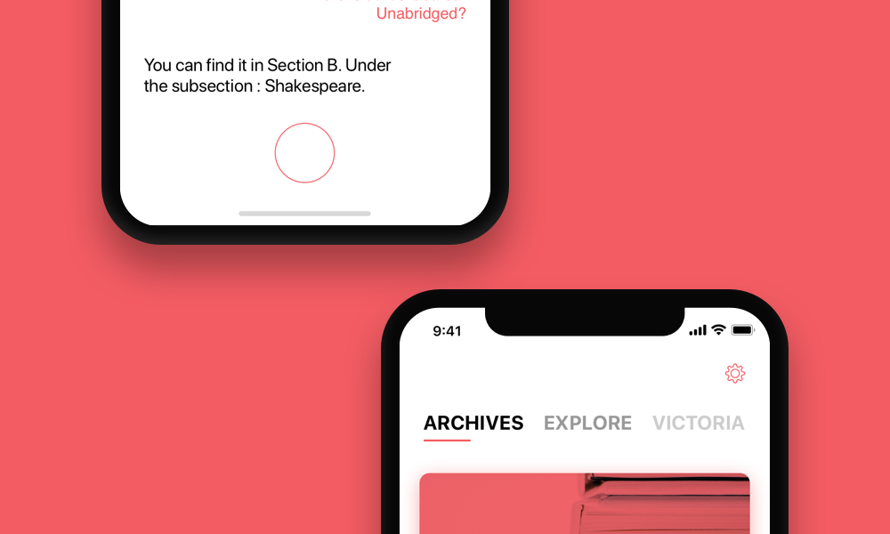
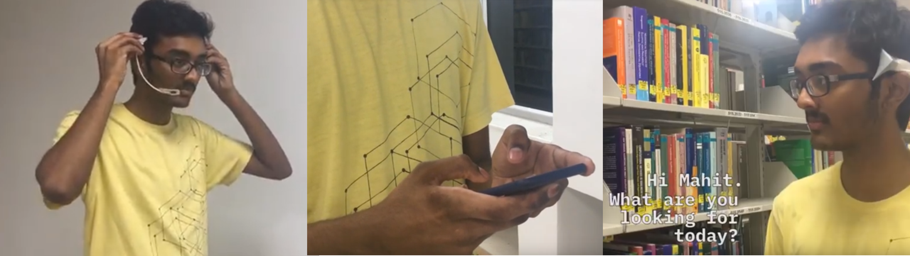
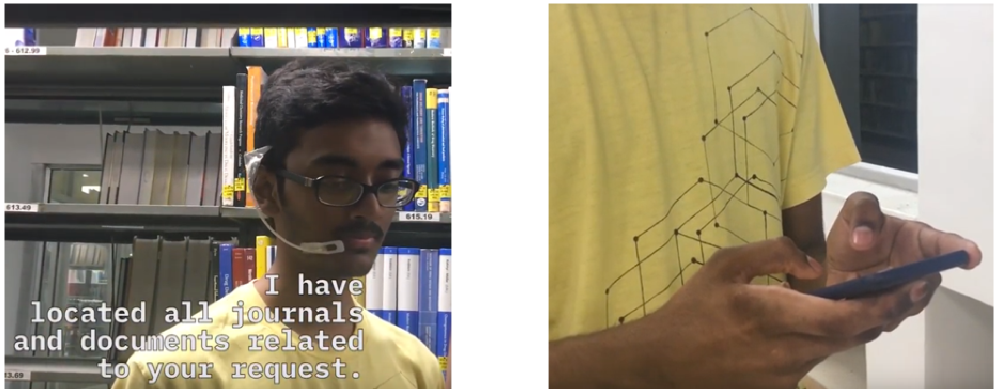
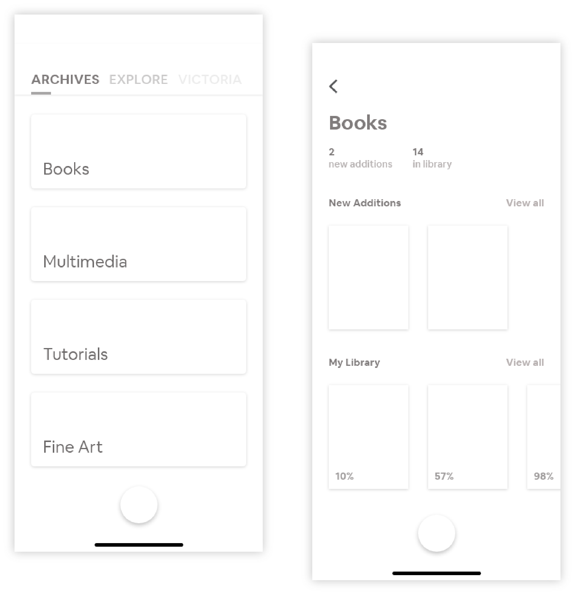
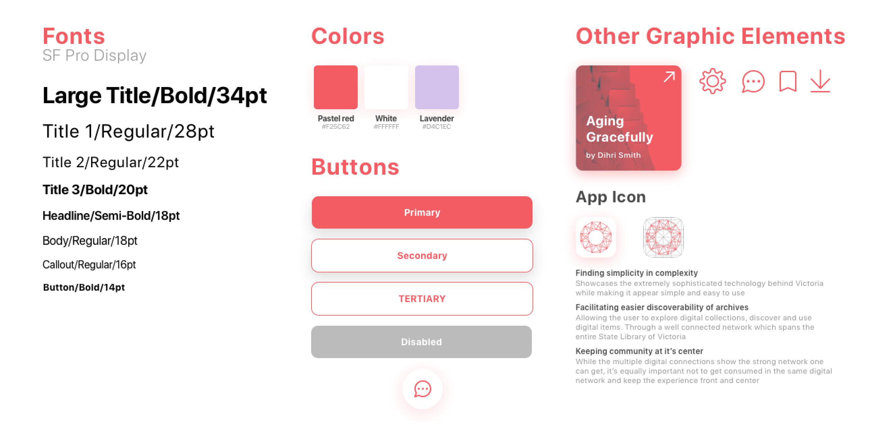

and Interaction Design
Fall 2018
The Problem
State Library Victoria, Australia wants to help their users explore, discover and use digital items. At any point, the library’s shelves have only 5% of the library’s entire collection and the users do not have a convenient method to access the digital content.
The Solution
Our solution is a voice based artificial intelligence companion which has access to all of the library’s digital content. Victoria, named after the library itself, helps the user access the digital resources of the library, give suggestions, connect with people and facilitate user contributions to the library.
Goals
From extensive research gone into understanding how libraries and how they are evolving across the world, these four goals were arrived upon, in designing for discoverability.
Having listed the various goals we were designing for, we identified problem areas that pose challenges to the people in question. We then framed our insights and goals into a ‘How Might We’ question, to turn these problems into ideas.
“How Might We design for the curious, who want to learn something new?”
Ideation and Further Brainstorming
We ideated and brainstormed and came up with multiple ideas for solving the problem. We mapped all the potential solutions in an Impact vs Feasibility grid to narrow down on one solution.
The Solution
Victoria is your really smart personal assistant throughout the time you are inside the library. She can send you any sort of media, from books to tutorials, make you meet with anyone you might be interested in meeting and a lot more!
Mode of Communication
Implementing Victoria was possible using a platform similar to Google’s Assistant or Apple’s Siri. There were two drawbacks to this implementation.
So we used Alter Ego.
AlterEgo is a closed loop, non-invasive wearable system that allows users to communicate with a computer by vocalizing internally. This system met all our goals and was a great addition to the solution to ensure the system was as inclusive as possible. Read more about it here:
Key Interactions
To illustrate some of the important features of Victoria, we singled out and storyboarded the critical use cases to better understand Victoria's functionality.
Onboarding
When the user enters the library, they are given an AlterEgo headset which connects to their phone.

Discovering People
Victoria can suggest material or resources depending on what the user requires. She can guide the user in the library and send them to the connected phone.

Connecting People
Victoria can set up meetings with people currently in the library who are interested in mentoring or advising them in specific fields.


Exploring Archives
The user can acess downloaded resources on the phone application, with resources arranged media wise.

The Design
Even though Victoria is intended to be accessed through the AlterEgo headset, we visualised a mobile phone platform to access the resources suggested by Victoria, along with allowing the user to access other library resources.
Character Traits
We decided to design Victoria with a personality that would reflect four important character traits.

Form Moodboard
We decided to design Victoria with a personality that would reflect four important character traits. 
Visual Moodboard
In a similar vein, the color palette and visual styling for Victoria was chosen based on the personality traits. Since SLV didn’t have a color palette of its own, we decided to create one. 
Application Guidelines
A strict set of guidelines were then prepared, in accordance with Apple’s Human Centered Design Guidelines.

Final Screens
Archives contains all the materials and resources downloaded by the user from the State Library of Victoria.
Speak with Victoria by simply addressing her through the headset. Through the app, with the click of a button, Victoria is summoned and a conversation history is also available.
Explore the various new arrivals in the State Library of Victoria. These shows the latest additions and new arrivals along with session updates.
Find out the capabilities of Victoria and how she can help you.
Learning
This project spanned across multiple fields of design enabling me to see how multiple factors come together when designing for large systems. I got to explore domains I had never explored before, including Voice UI and novel technologies such as AlterEgo.
Scope
With more time on the project, we would’ve worked on conducting primary research including first-hand interviews and survey sessions, followed by prototyping Victoria herself and the mobile application to test its feasibility and functionality.